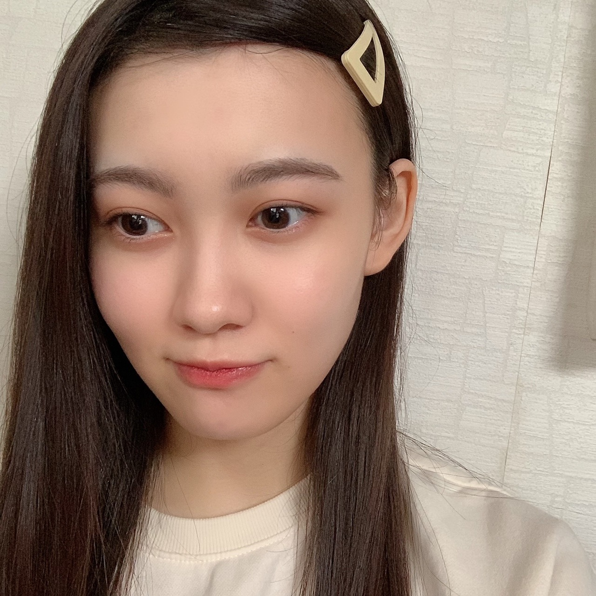
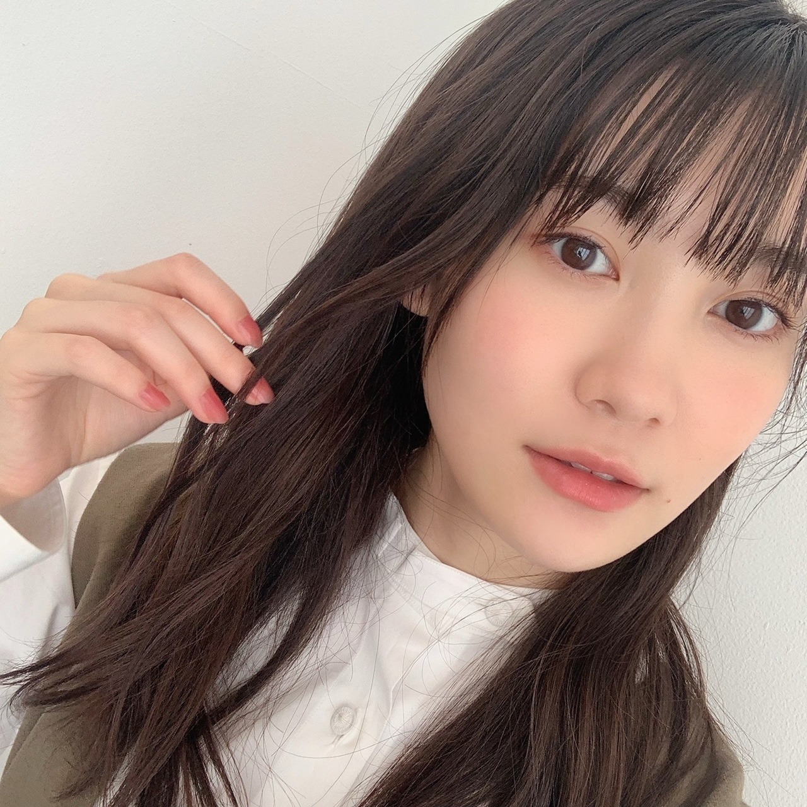

2020/1106Friマフラーいつからですか？ 松尾美佑
すっっっっごい寒がりなんですよ。
寒すぎて困ってます最近
そんな今日は漢検を受けました〜
仲間な人も多いのかな？と思ってます
難しかった｡です。
( ･᷄-･᷅ )
千葉県出身
高校2年生
16歳の
松尾美佑です¨̮
なんか、もっとしっかり自己紹介したいなぁって毎回思うんですけど
何を紹介しようか迷っちゃって迷っちゃって。
何がいいですかね？
気が向いたらたすけてください。

髪型悩み中
お返事からにしますね ꪔ̤̥
✽ ミュウちゃんは「朝」と「夜」どっちが好き？
多分夜行性です( Ꙭ)
✽ ショートケーキの苺はいつ食べますか？
私、1番最初に食べちゃうんですよね。
✽ 甘栗食べてる美佑ちゃんですがケーキで1番好きなのはモンブランですか？
タルトが好きです！！
✽ ブログに書いてた見たい映画って何ですか？
あ！言ってなかったですね！
アリスです！アリス・イン・ワンダーランドの方！
あの不思議な世界が大好きなんです
実はハロウィン過ぎた今も見れてないです
( ᵕ ᵕ̩̩ )
✽お勧めのシャンプー、リンス、くし、を教えてほしいです！
くしじゃなくてブラシになっちゃうんですけど、タングルティーザー良きです☺︎
シャンプー達は探し中です！
✽ 最近家で何してますか？
今日の漢検までは四字熟語書いてました！
結構楽しかったのでこれからもやりたいと思います(気が向いたらね)
✽ 憧れの衣装や着てみたいなって思う衣装はある？？
白石さんの卒業コンサートで2期生さんが『バレッタ』の時に着ていた衣装が凄い好きです！ちょっと大人っぽくて、ベルトがキラっとしていて、生地も好きだし、色合いも形も回った時のスカートのふんわり具合も全部好きです！
あと2018年の紅白歌合戦の『帰り道は遠回りしたくなる』の衣装もすっごく好きです！
まだまだいっぱいあります
衣装は近くで見たり、着させて貰った時に想像以上に細かくて綺麗で毎回びっくりします！たくさんの衣装に出会いたいなって思います☺︎
11月4日に発売されました！
ananさんに44人、全員で掲載して頂き私達新4期生も参加させて頂いています！
5人でハマっていることについて話したり、
初めて撮影でネイルをして貰ったり、
凄く楽しかったです！

本当に綺麗な色のネイルでした！
明日は〜
なお〜〜〜〜〜〜〜
寒いね☃︎
また5日後！
ミュウでした¨̮
ばいっっっっっっっ( Ꙭ )/''
コメント(189)
みゆちゃん今日も１日お疲れ様です。
みゆちゃん今日も可愛いです。
今日はお仕事お休みでした。
今日は１日のんびりと過ごしました。
最近は連勤続きで足が痛いです。
明日から三連勤頑張ります。
これからもお仕事頑張って下さい。
自分もお仕事頑張ります。
これからのブログを楽しみにしてます。
4期生配信ライブ決定おめでとう！！
絶対観るね！！笑
お身体にはお気をつけて！！
漢検かぁ。お疲れ様！！
ミュウちゃんなら難しい漢字も書けたことでしょう！笑
ミュウちゃんの自己紹介何がいいかな。
聞きたいことはいっぱいあるけど、多すぎて困るなぁ笑
でもミュウちゃんの得意なことはもっと知りたいかな。
ミュウちゃんの新しい一面知りたい！
anan読んだよー！
メンバーのハマってることとか、色んな特集があって面白かった！！
ananの乃木坂特集好き。
またゆっくり見返します。
4期生ライブ決まったね！！
16人揃って初の4期生ライブ！
配信にはなるけど楽しみにしてる。
あと1ヶ月後待ちきれへん！
レッスン大変やと思うけど頑張れ！！
ではでは体調には気をつけて。
次のブログも待ってます。
いつもありがとう。
マフラーの季節ですね～
夜はマフラーしたくなる！
漢検も寒かったのかな～笑
前髪流しお気に入りですー！
個性も出てる気がしますよ✨
自分も夜行性気味なのですが、
ケーキの苺は最後に食べがち♪
卒コンのバレッタ素敵でしたよね！
色んな衣装姿いっぱい見たいです✌
ananさんとてもキラキラしてます☆
ブログ写真のネイルも艶々ですね～☺
みゆ！
やっほー！
ひろき(Yandji)です☺️
ブログ更新ありがとー！！！
質問タイムー！！！
ストレス溜まったらどーやって解消してる？
また、コメントするね！
では、またねー！
ひろき(Yandji)より
ブログ更新ありがとう！！
そのネイルの色いいね！
暖色大好き！
あと、4期生ライブ決定したね！
おめでとう！
今からワクワクが止まらない！
キラキラ輝いて歌ったり踊ったりしてるみゆちゃん見るのがほんとに楽しみ！
大好き
ひろと
私も乃木坂さんの衣装大好きです！全部キラキラしていて、ふわふわしていて…とにかく可愛い♡パフォーマンスを見る時に、どんな衣装かな？と毎回楽しみにしています( Ꙭ)
4期生ライブ楽しみです！12月は受験が近すぎて拝見することは難しいかもしれませんが、上手くいく事を願っています☺︎︎︎︎終わったらぜひ感想をブログに載っけてくださると嬉しいです♡
突然ですが、
＊乃木坂に入って自分がいい方向に変わったなと思うことはありますか？
実は私も芸能界に少し興味があり、自分の人生の経験値をあげるためにも受験が終わったらオーディション等に挑戦してみたいなと思っています。みゆちゃんが、芸能界という未知の世界に飛び込んで良かったなと思うことなどあれば教えてくださいm(*_ _)m
急に重めの質問をしてしまいすみません…
コロナもまた流行ってきているので、気をつけてください！
これからも応援していますᕙ( ˙-˙ )ᕗ
ってか、ミュウ(>ｏ<)ちゃんは「漢検」受けたのかぁ～♪良き良きですなぁ～( *´艸｀) 僕は、資格という資格はあまり持ってなくて「自動車免許」と「全国手話検定２級」の２つしかとってない。
（自動車免許は、今後に繋がる大切な移動手段の１つだから、１８年前にとったし、全国手話検定２級は、僕の得意分野である「手話」を２９年間やってるし、神奈川・東京だけではなく全国で通用する検定試験の１つだし、英語で言うと「ビジネス英会話」の８００点位な難問が出される資格だし、１０年間という手話指導者歴・２９年間という手話学習歴」があったから、１発合格だったよ。手話の方は(笑)( *´艸｀)）
って、まだ１１月に入ったばかりだというのに、めちゃくちゃ寒くなってきたよねぇ～。僕も上半身は着こめば暖かくなるけど、下半身はどれだけ温めても、「おへそから下まで積もっている雪の中を歩いてるような感じ」で冷たく冷え切ったままだよぉ～( ˘•ω•˘ ) でも心は、「乃木メン」という妹達がいるから冷えることなく暖かいんだけどね(*^▽^*)
僕の住んでる場所も場所で「山間部」だから、小中学校の同級生から「仙人かっ！Σ(･ω･ﾉ)ﾉ！」って笑い話になったこともあるよ(笑)( *´艸｀)
ミュウ(>o<)ちゃんも、これからの時期はますます肌寒くなってくる時だし、風邪等々には充分気を付けて毎日を元気いっぱいで過ごしてね☆彡
それじゃあ、次のブログもめっちゃ楽しみにしてるねぇ～ヽ(^o^)丿また５日後に会おうね♪
明日も一日！一緒にお家時間を楽しもうね♪大好きだよ♪ミュウ(>o<)ちゃん☆彡
みゆうちゃんのアリス役見たいねぇ!可愛いと思うよ!(≧▽≦)これからも頑張ってね!応援してます!( ◜‿◝ )♡(｡♡‿♡｡)(◍•ᴗ•◍)❤
ー質問ー
・気晴らしではよく何をする？
・写真集を発売するならどこで撮影したい？
・乾燥肌に悩んでいるけど、良い対策はあるかな？
ありがとう！次回も楽しみにしているよ。
今ハマっていることを話したり、アクロバットとかチアの話を入れてみるのはどうでしょうか！
ライブでキラキラしてるミュウちゃんがまた見られるのが嬉しいです！
ところで、ノギザカスキッツ、3期生も入ってきてよりパワーアップですね！
楽しみです〜
自分も寒がりで暑がり…。
もう11月だもんね。
寒いよね。
漢検お疲れ様です。たしかに難しいよね、僕は結構苦手だった(>_<)
僕はマフラーは最低気温10°C未満になったら巻くよ。たぶん今月中には巻くかもね。
来月4期生ライブ決定したね。是非是非頑張ってね(*^◯^*)
ではまたね、ミュウ！
漢検お疲れ様。タルトでも食べつつ『アリス・イン・ワンダーランド』を鑑賞して羽を伸ばすのも良いかも。良い結果を願っています。
やって来ました『an・an』乃木坂ジャック！ 新4期の座談会も話に花が咲きました。ミュウちゃんは二重ネックレスがブームという事で。美容に関心も高いからファッション系の撮影に招かれると嬉しいですね♪
私だよ！( ・`д・´)にし●か～す…←懐かしのネタ持ってくるシリーズ。
同期るなちゃんに聞いて、ピンとくるかどうか。
札幌は、４日に初雪観測したんですが、僕はまだマフラーしてないです。【マスク】ならしてます。←あたり前や！みんな大体春からだよ！！
自己紹介？ミュウにちなんで、、
わたしのハートもゲットして！♥️松尾、ミュウ！！時期、映画化。←いゃ、いたいけなミュウちゃんの羞恥心も考えよう！（ぺこぱさん風）
あ、そうだ。一番忘れちゃいけない。16人の４期生ライブ決まったみたいですね。おめでとう！
(*^▽^)/★*☆♪
みんな健やかに、16人で披露できると良いね☆
質問です。（微妙な質問ですみません）
●漢検は何級を受けられましたか？
私もこの間漢検受けたので美佑さんも受検されたようで
嬉しかったです。私はこれからも頑張って勉強しようと
思っています！
前のブログのコメントで応援してます
今日私は身体測定と視力検査があったんだけど身長が0.3cm縮んでて悲しかった。。視力はなんでか去年より良くなってたんだぁ〜笑笑
まだanan買えてないけど明日休みなので買いに行きます〜！！
またブログまってるねーー！
好きだったらオススメの作品教えて^_^
最近寒くなってきたね〜
悩んでいる時点でもう可愛い！！
お顔が天才(*´-`)
ネイル良い色だ！！
美佑ちゃんにとても似合ってるよ(*´꒳`*)
質問です(*^^*)
朝起きたとき、寒さを弾き返して布団から出る良い方法はありますか？？
自分はアラームを5分おきにかけて無理矢理起きてます笑
5日後のブログ更新も楽しみに待ってる(^^)
体調に気をつけてお仕事頑張ってね！！
初めてコメントします^_^
不思議とつかめないというか、なんだか探れないというか、、不思議です笑笑
これからどんな活躍を見せてくれるのか、楽しみでなりませんよ
自己紹介の提案をしたいのだけれど、これまでの先輩方の様に、まず一手打たないと、だね。守ってても仕方ない世界だと思うから、探る意味でも前にアタックしてみたらいいんじゃないかな。
時には進めないところに行き着くかもしれないけど、その意味もまた存在するよ
人のものじゃなくて、自分の持ち味を存分に見せてほしいです
次のブログも楽しみにしてるね〜
それじゃあね！！
あっという間に11月だね 確かにそろそろマフラーの季節だよね 僕は特に使わないからマフラーを上手いこと着こなしている人はすごいと思うなー
やっぱりミュウちゃん綺麗だね！ananまだ買ったことないからこれを機に買ってみようかな みんなの可愛い姿をみたい！
それと乃木フェスに新四期登場するね！絶対当てたいなー
カード写真見たけどめちゃくちゃ可愛かったよ
あと、四期生ライブ開催決定おめでとうー！！！！これをずっと待ってた！四期生みんなのライブがもう一度見られるのほんとに嬉しいよ！早めのクリスマスプレゼントだね
個人的には去年の四期生ライブで一人一曲センターがあったから、美佑ちゃんたちもやってほしいなー もしそのコーナーがあったら美佑ちゃんは何の曲がやりたい？
配信という形だけど、画面の向こうでペンライト持って応援してるね！
また五日後！ バイバイ～！
ananのメイク、ネイルとリップの色がちょうど合ってて可愛い！
自己紹介、将来の夢を入れるとかどうかな？
北川悠理ちゃんがいつも「将来の夢はドラえもんを作ることです！」って言ってるのみたいに、いつかはきっと！みたいな夢があれば良いかも、と思いました◎
ハンプティダンプティ
に響きが似ていますが
パンプキンポンプキン
でございます。
Alice in Wonderland
面白いですよ。
お忙しくてなかなか
見るお時間が無いかも
しれませんが、ちょっびり
夜更かししちゃいましょう。
チークの色がステキですね。
四期生の方々でメイクの
お話しなどしますか？
私はAmplitudeの
ベビーピンク色の
チークが好きです。
2018年紅白の帰り道衣装いいですよね！あれ好きです
(´- `*)
応援してます！！！
高校生になってから一回も受けてないですw
中2の時に3級受けたんですけど、四字熟語全部違ってて落ちましたww
漢字は大の苦手で多分これから一生受けないと思います
勉強せないけませんねw
4期生単独ライブおめでとう。
こんどは16人が主役のライブ。どういう演出になるか楽しみですね。
ミュウちゃんがセンターをする曲あるのかな？
更新ありがとう
マフラーはいつからですか?
お答えしましょう
マフラーはしないかな
今までほとんどしたことないから今冬もしないんではないかなって思ってます。
漢検お疲れ様でした
合格をお祈りしてます
自己紹介何がいいかな
得意なことや趣味、今自分の中で流行ってることとか
何かいいのが思い付いたらまた書かせてもらっていいかな
anan明日届く予定だから明日を楽しみにしたいと思います
4期生ライブおめでとう
すごく楽しみです
画面の向こう側からエール送ります
身体に気をつけて元気に過ごしてね
ではまたね
ばいばい
今の自己紹介結構良いと思うよ。
髪型はショート試してみてどうですか？
漢検お疲れ様！良い結果になりますように…！
4期生ライブ開催されるそうで！楽しみにしてるね(o^^o)
自己紹介は……そうですね……好きなこととか得意なこと、あとは座右の銘とか書いてみてはどうでしょう？
黒見さんの『3の倍数9・6・3(くろみ)』とか、林さんの『
負けるなしょげるな林瑠奈、今日も1日頑張るな(ピンポーン)』みたいなフレーズがあると強いですよね。
例えば、『ミュウ！ミュウ！ミュウ！ミュウ！松尾ミュウ！芭蕉じゃないよ、松尾美佑！』みたいな。
(うしの頭では、これが限界でした。)
何か、いい感じの自己紹介が出来るといいですね。
巻きたいと思った時が、マフラーの巻き時です。
巻いていきましょう。
四期生ライブ開催決定おめでとうございます。(*’ω’ﾉﾉﾞ☆ﾊﾟﾁﾊﾟﾁ
白石さんや中田さんが卒業しても、四期生がいるぞ！ってところ、見せつけてくださいね。
では、また何かあったらコメントさせていただきますね。m(_ _)m
文武両道の実践、カッコいいです。クイズ番組でも漢字は必須なので、押さえておくに越したことはないですね。
吉報を待っています(^^)b
防寒対策も万全に♪ (#^ー°)v
人柄がもっと知れて嬉しかったりします。
4期生ライブおめでとうございます。忙しい時期かと思いますが、どうか楽しんで、そして美佑ちゃんの魅力を見せつけてください。
楽しみにしています。
アリスクイズーーー！！！
では、問題！（ｼﾞｬﾝ♪）
作者のルイス・キャロルがゴッドストウへのピクニックの際に作中のモデルになった"アリス"に語って聞かせた即興のお話しで、不朽の名作「不思議の国のアリス」の原型になった物語を何と言うでしょうか？
・・・・・
正解は、、、「地下の国のアリス」でした♪
以上、ステキな偶然？の賜物でした♪♪
笑笑。
4期生ライブとスキッツすんごい楽しみです！！！
応援してます〜
自分はマフラーではなくネックウォーマー派ですが、もうそんな時期になってきましたね。
みゆちゃんはどういう寒さ対策してますか?教えて下さい！
漢検は何級を受けたのですか?こっちは英検を受けたのでちょっと違うけど仲間ですね〜
次は11/11ですね!楽しみにしてます
ブログ更新ありがとう。
マフラーの出番はまだまだ先かな。
これからもっと寒くなるのに、今からマフラーを巻いているようでは冬を乗り切れない気がして
。笑
徐々に寒さに慣れていこうと思ってます。
anan見たよ～。
楽しそうに対談していたみたいで何よりです。
古着屋さんでアクセサリーを見つけてくるって何か宝探しみたいで楽しそうだね。
オフショットもありがとう！
ネイルすごく綺麗な色だね！
メイクもすごく似合ってたよ！
ミュウちゃんのモデル姿もっと見たいなぁって思った！
そして、『4期生ライブ 2020』開催決定おめでとう!
ミュウちゃんのパフォーマンスをまた見られるなんてめっちゃ嬉しい！
精一杯応援するよ！
楽しみにしてるね！
ブログの自己紹介はミュウちゃんが最近気になったこととか経験したことを書いて、そのことについて質問を投げ掛けたりするのがミュウちゃんのことを知ることができるし、ファンの人と繋がった感じになれる気がして良いかなって思った。
具体的なアドバイスじゃなくてごめんね。
寒がりのミュウちゃん、風邪引かないように気を付けてね。
4期生ライブのレッスンも頑張って～！
それじゃ、またねー。
コメントする

PROFILE
新4期生リレー
202104
| SUN | MON | TUE | WED | THU | FRI | SAT |
|---|---|---|---|---|---|---|
| 1 | 2 | 3 | ||||
| 4 | 5 | 6 | 7 | 8 | 9 | 10 |
| 11 | 12 | 13 | 14 | 15 | 16 | 17 |
| 18 | 19 | 20 | 21 | 22 | 23 | 24 |
| 25 | 26 | 27 | 28 | 29 | 30 | |

素敵なネイルだね！